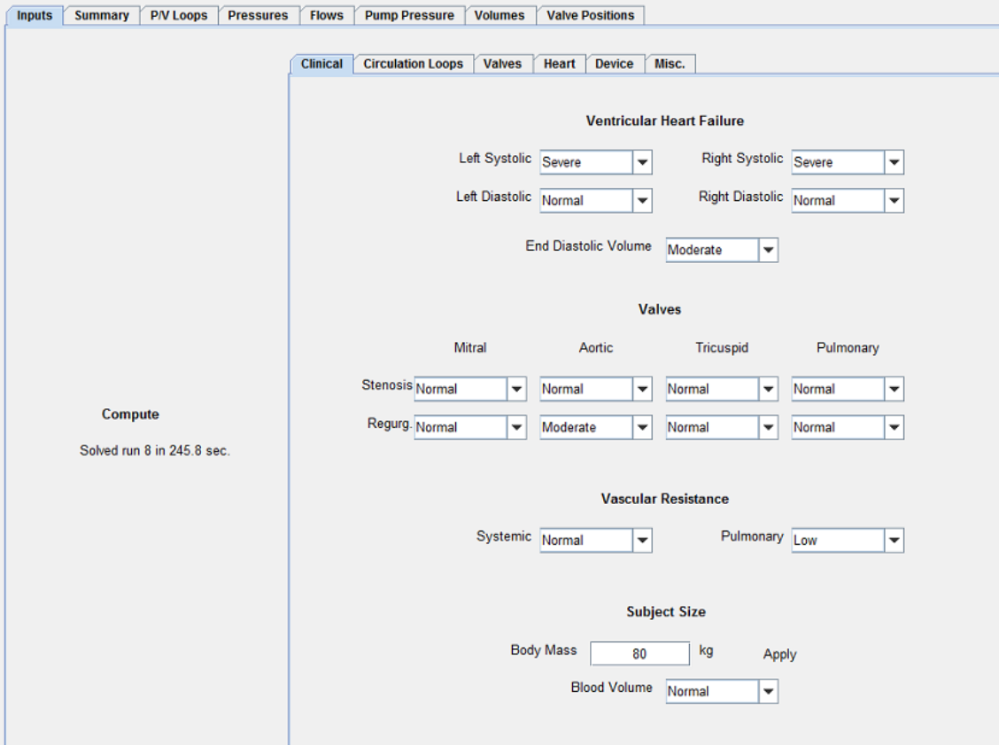

Using the Virtual Mock Loop
The input screen allows the user to specify a variety of different conditions that affect the patient. The conditions can be selected individually or in combination.

The tab for the assist device allows you to set the operating speed as well as the design point.